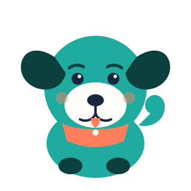

Track glucose
Log readings in seconds and get gentle, color-coded feedback the moment you save.
Buddy helps you log glucose readings, discover foods that keep you steady, and build small daily habits — with the loyalty of a good dog and none of the guesswork.

Three simple tools that work together, so staying on top of your levels feels like routine, not a chore.
Log readings in seconds and get gentle, color-coded feedback the moment you save.
Search real nutrition data or browse our hand-picked diabetes-friendly favorites.
See your recent readings at a glance so trends stand out before they become surprises.
Small, consistent check-ins add up — Buddy is here for the daily routine, not just the emergencies.